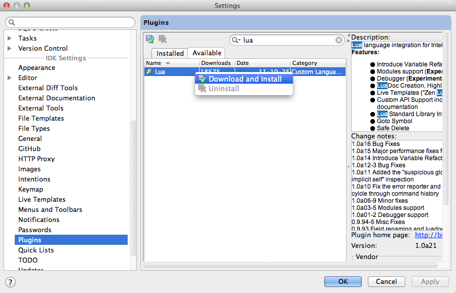
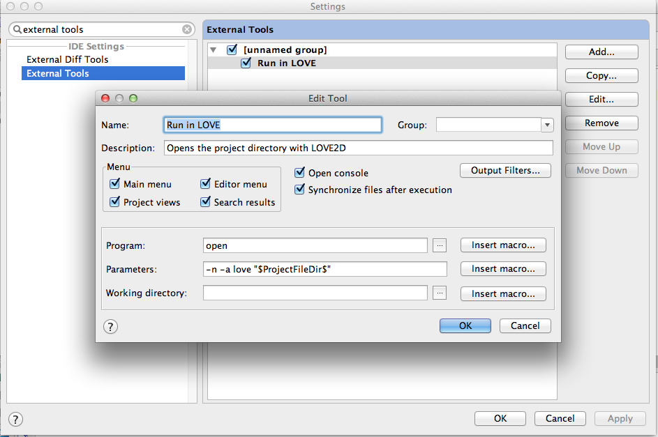
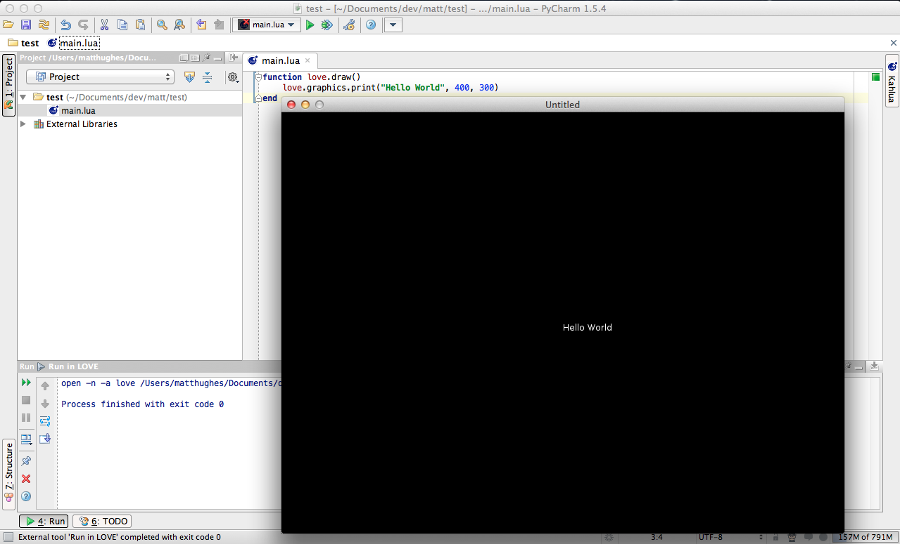

Tutorial:Setting up PyCharm
PyCharm is an awesome IDE originally designed for Python development. However, it can also work with many other languages, including Lua.
This is a short tutorial on setting up PyCharm on OSX Lion for LÖVE projects.
I assume you already have PyCharm installed, and love is in your Applications directory.
1. Open PyCharm Preferences and go to the Plugins page. Search the available plugins for lua. Right-click on it and select Download and Install.

2. Go to the External Tools page in PyCharm Preferences. Add a new tool, give it a name. Fill in the following options:
- Program: open
- Parameters: -n -a love "$ProjectFileDir$"
$ProjectFileDir$ is a macro that inserts the project directory. You can find more macros in the "Insert Macro" button.

At this point, you can launch LÖVE projects by running your new tool from the Tools menu. I like to have a shortcut key, but the next step is optional.
3. Go to the Keymap page in the PyCharm Preferences. Search for the name of your tool, and click Add Keyboard Shortcut...

I used the shortcut Ctrl-Command-A.
That's it! You can now make a new project, add a new file called "main.lua" and fill it with all your lovey goodness. Run it simply by hitting your shortcut key or running LÖVE from the Tools menu.
